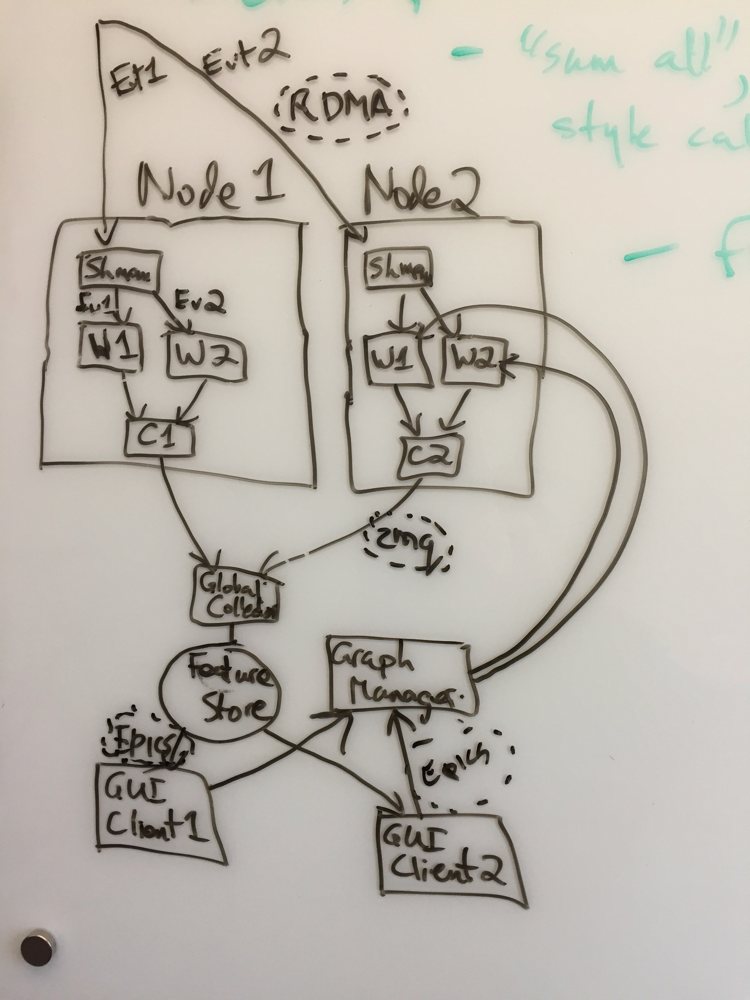

AMI2 is a distributed visualization system for use with LCLS-II Free Electron Laser. It is a rewrite of the previous AMI package.
Please see the System Diagram below. Data flows in real time from sensors and are delivered to a cluster in the form of Events. Event data is distributed round-robin to nodes of the cluster where it is deposited in a shared memory region. A Worker process picks up the data and passes it through a Computation Graph according to the needs of the current clients. Results from the Computation Graph are accumulated in Collector processes, after which they are passed to the Feature Store. Client processes (GUIs and devices) access data from the Feature Store. Clients specify the form of the Computation Graph by communicating with the Graph Manager.

Data delivery events from sensors, distributed round-robin to nodes.
Compute nodes in the cluster.
Shared memory region into which event data is delivered.
Python worker processes perform computation on the data.
Python collector process assembles cumulative data.
API from which clients can subscribe to data (should be dsitributed)
Python processes that manipulate and optimize the computation graph
Python process that sends requests to the graph manager and receives data from Feature store.
Data communication protocal used by DOE labs for instrumentation
Robust to node or process failure, recover from crash
multiple users can simultaneously edit the computation graph (at low rates)
Scalable to clusters of any size including supercomputers
Drive it online from shared memory event mechanism, or offline from a file
Portable, no Psana dependencies (or isolate them), hardware agnostic Linux/IA, any network
Follow well defined coding conventions, good project hygiene and testing
Extensible - new clients, new GUI elements, new Computation Graph operations
Two version, one with Legion and another without
Epics protocol to send data to clients, also for clients to make requests
"sum all", "pick 1", "sum 1" style calculations
The first milestone is a generic use case of the most common features, driven from a canned example. This will also consitute the first test in a suite of tests.